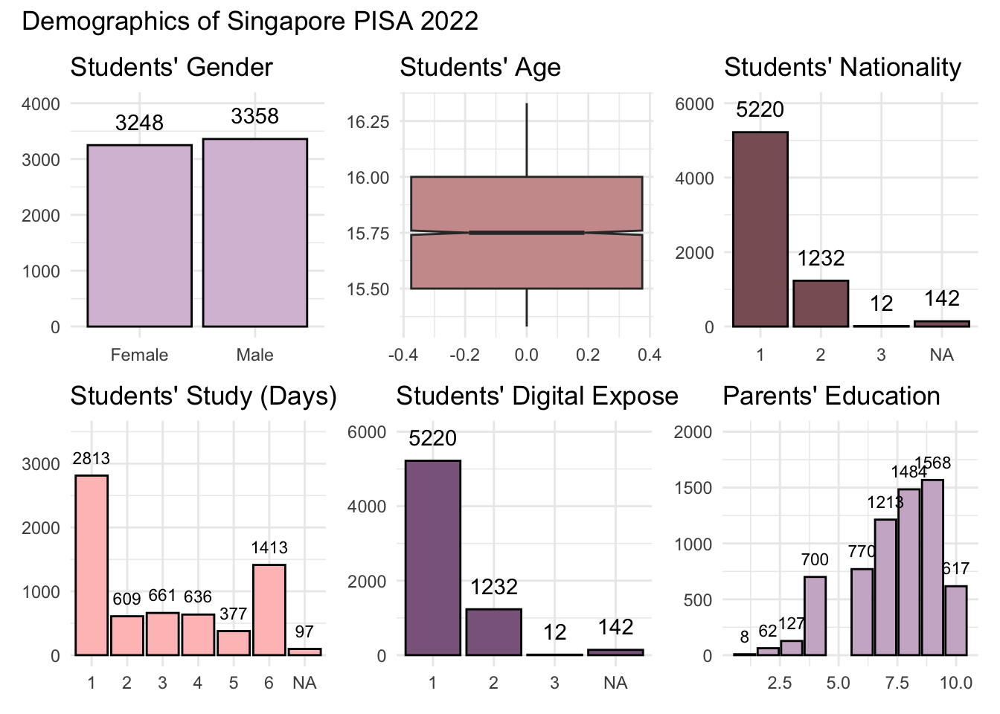

pacman::p_load(ggiraph, ggrepel, kableExtra, patchwork, ggthemes, hrbrthemes, haven, tidyverse) OECD PISA Global Education

1. Learning Objectives
The Organisation for Economic Co-operation and Development (OECD) Programme for International Student Assessment (PISA) is a global education survey conducted to examines what students know in mathematics, reading and science, how well students can solve complex problems, think critically and communicate effectively. This gives insights into how well education systems are preparing students for real life challenges and future success. It provides the most comprehensive and rigorous international assessment of student learning outcomes to date. Results from PISA indicate the quality and equity of learning outcomes attained around the world, and allow educators and policy makers to learn from the policies and practices applied in other countries.
PISA 2022 reports the following:
Describes students’ performance in mathematics, reading and science;
Examines gender differences in performance;
Investigates how performance relates to students’ socio-economic status and immigrant background;
Describes how the quality and equity of learning outcomes have evolved since previous PISA assessments.
OECD education director, Andreas Schleicher, shared in a BBC article that “Singapore managed to achieve excellence without wide differences between children from wealthy and disadvantaged families.”. Furthermore, the slogan “Every School a Good School” was popularised by Mr Heng Swee Keat when he was education minister from 2011 to 2015.
The general public, however, strongly belief that there are still disparities that exist, especially between the elite schools and neighborhood school, between students from families with higher socioeconomic status and those with relatively lower socioeconomic status and immigration and non-immigration families.
Singapore participated for the first time in PISA in 2009. By comparing results internationally, policy makers and educators in Singapore can learn from other countries’ policies and practices.
PISA is conducted every three years to assess the education systems worldwide through testing 15 year-old students in the subjects of mathematics, reading, and science.
The PISA 2022 database contains the full set of responses from individual students, school principals and parents. There are a total of five data files and their contents are as follows:
Student questionnaire data file (focus of this practice)
School questionnaire data file
Teacher questionnaire data file
Cognitive item data file
Questionnaire timing data file
These data files are in SAS and SPSS formats.
Why are 15-year-old students choosen for assessment?
PISA measures student performance as the extent to which 15-year-old students near the end of their compulsory education have acquired the knowledge and skills that are essential for full participation in modern societies, particularly in the core domains of reading, mathematics, and science.
Using appropriate Exploratory Data Analysis (EDA) methods and ggplot2 functions, we will reveal the following in this practice:
- the distribution of Singapore students’ performance in mathematics, reading, and science, and
- the relationship between these performances with schools, gender and socioeconomic status of the students.
2. Load Packages
The following R packages will be used:
ggiraphggrepelprovides geoms to repel overlapping text labelsggthemesprovides themes, geoms, and scaleshrbrthemesprovides typography-centric themes and theme componentspatchworkprepares composite figureshavenread and write various data formats used by other statistical packagestidyversesupport data science, analysis and communication taskkableExtra
3. Import Data
The PISA 2022 database was released on December 5, 2022. For the purpose of this practice, the Student questionnaire data file will be used to fulfil the task.
Source: PISA 2022 (data) and PISA 2022 Results Volume 1 (guide)
stu_qqq <- read_sas("data/STU_QQQ_SAS/cy08msp_stu_qqq.sas7bdat")The output shows 613,744 observations with 1,279 variables.
For relevance, we filter stu_qqq by the column country code (CNT) for SGP to obtain Singapore results.
stu_qqq_SGP <- stu_qqq %>%
filter(CNT == "SGP")The output shows 6,606 observations with 1,279 variables.
Save Point
write_rds(stu_qqq_SGP, "data/stu_qqq_SGP.rds")4. Explore Data
Load Point
stu_qqq_SGP <-read_rds("data/stu_qqq_SGP.rds")Code
flowchart LR
A[Country Code] --> B[School ID]
B --> C[Student ID]
C --> D{Student \n Performance}
D --> E[Maths]
E --> H[Anxiety \n Cognitive Activation \n Exposure \n Self-efficacy \n Teacher Support]
D --> F[Reading]
D --> G[Science]
F --> H
G --> H
C --> I{Education \n System}
I --> J[School Characteristics: \n Grades \n Classroom \n Teacher]
I --> K[Student Characteristics: \n Attitude \n Background \n Behaviour]
C --> L{Economic \n Social \n Cultural \n Status}
L --> M[Parents Highest Level of Education\n Parents highest occupational status \n Home Possessions]flowchart LR
A[Country Code] --> B[School ID]
B --> C[Student ID]
C --> D{Student \n Performance}
D --> E[Maths]
E --> H[Anxiety \n Cognitive Activation \n Exposure \n Self-efficacy \n Teacher Support]
D --> F[Reading]
D --> G[Science]
F --> H
G --> H
C --> I{Education \n System}
I --> J[School Characteristics: \n Grades \n Classroom \n Teacher]
I --> K[Student Characteristics: \n Attitude \n Background \n Behaviour]
C --> L{Economic \n Social \n Cultural \n Status}
L --> M[Parents Highest Level of Education\n Parents highest occupational status \n Home Possessions]
SCH_table <- stu_qqq_SGP %>%
group_by(CNTSCHID) %>%
summarise(TOTAL_STUDENT = n())
DT::datatable(SCH_table)‘70200150’ no such school ID
mean(SCH_table$TOTAL_STUDENT)[1] 40.28049duplicate <- stu_qqq_SGP %>%
group_by(CNTSTUID) %>%
filter(n() > 1)sum(is.na(stu_qqq_SGP))[1] 41685005. Visualize Data
stu_qqq_SGP_perf <- stu_qqq_SGP %>%
group_by(CNT, CNTRYID, CNTSCHID, CNTSTUID, ESCS) %>%
summarise(MATH = round(mean(PV1MATH, PV2MATH, PV3MATH, PV4MATH, PV5MATH,
PV6MATH, PV7MATH, PV8MATH, PV9MATH, PV10MATH), 1),
READING = round(mean(PV1READ, PV2READ, PV3READ, PV4READ, PV5READ,
PV6READ, PV7READ, PV8READ, PV9READ, PV10READ), 1),
SCIENCE = round(mean(PV1SCIE, PV2SCIE, PV3SCIE, PV4SCIE, PV5SCIE,
PV6SCIE, PV7SCIE, PV8SCIE, PV9SCIE, PV10SCIE), 1))5.1 How did Singaporean students perform in Maths, Reading and Science?
Show the code
tooltip_css <- "background-color: white; font-style: bold; color: black"
stu_qqq_SGP_perf$tooltip <- c(paste0("School = ", stu_qqq_SGP_perf$CNTSCHID,
"\nStudent = ", stu_qqq_SGP_perf$CNTSTUID))
plot1 <- ggplot(data = stu_qqq_SGP_perf,
aes(x = MATH))+
geom_dotplot_interactive(aes(data_id = CNTSTUID, tooltip = stu_qqq_SGP_perf$tooltip),
stackgroups = TRUE,
binwidth = 1,
method = "histodot")+
geom_vline(aes(xintercept = 472))+
coord_cartesian(xlim = c(0,1000))+
scale_y_continuous(limits = c(0,50))+
theme_minimal()+
theme(legend.position = "none",
panel.grid.major = element_blank(),
panel.grid.minor = element_blank(),
axis.line = element_line(colour = "grey"))
plot1
plot2 <- ggplot(data = stu_qqq_SGP_perf,
aes(x = READING))+
geom_dotplot_interactive(aes(data_id = CNTSTUID, tooltip = stu_qqq_SGP_perf$tooltip),
stackgroups = TRUE,
binwidth = 1,
method = "histodot")+
geom_vline(aes(xintercept = 476))+
coord_cartesian(xlim = c(0,1000))+
scale_y_continuous(limits = c(0,50))+
theme_minimal()+
theme(legend.position = "none",
panel.grid.major = element_blank(),
panel.grid.minor = element_blank(),
axis.line = element_line(colour = "grey"))
plot2
plot3 <- ggplot(data = stu_qqq_SGP_perf,
aes(x = SCIENCE))+
geom_dotplot_interactive(aes(data_id = CNTSTUID, tooltip = stu_qqq_SGP_perf$tooltip),
stackgroups = TRUE,
binwidth = 1,
method = "histodot")+
geom_vline(aes(xintercept = 485))+
coord_cartesian(xlim = c(0,1000))+
scale_y_continuous(limits = c(0,50))+
theme_minimal()+
theme(legend.position = "none",
panel.grid.major = element_blank(),
panel.grid.minor = element_blank(),
axis.line = element_line(colour = "grey"))
plot3
# g <- wrap_plots(list(plot1, plot2, plot3), ncol = 1)
# girafe(ggobj = g,
# code = print(plot1 + plot2 + plot3),
# width_svg = 6,
# height_svg = 4,
# options = list(
# opts_tooltip(css = tooltip_css),
# opts_hover(css = "fill: #ABEBC6;"),
# opts_hover_inv(css = "opacity:0.2;")
# )
# ) 5.2 Does the school system affect Singaporean students’ performance in Maths, Reading and Science?
5.2 Does socio-economic background affect Singaporean students’ performance in Maths, Reading and Science?
PISA index of economic, social, and cultural status ESCS is a composite score that combines into a single score information from three components: parents’ highest level of education (PARED index1); parents’ highest occupational status (HISEI index1); and home possessions (HOMEPOS index1, which is a proxy for family wealth).
ggplot(data = stu_qqq_SGP_perf,
aes(y = ESCS, x = MATH))+
geom_point()+
geom_smooth(size = 0.8)+
labs(title = "ESCS and MATH", x = "Maths", y = "Socio-economic Index (ESCS)")+
theme_minimal()+
theme(legend.position = "none",
panel.grid.major = element_blank(),
panel.grid.minor = element_blank(),
axis.line = element_line(colour = "grey"))
ggplot(data = stu_qqq_SGP_perf,
aes(y = ESCS, x = READING))+
geom_point()+
geom_smooth(size = 0.8)+
labs(title = "ESCS and READING", x = "Reading", y = "Socio-economic Index (ESCS)")+
theme_minimal()+
theme(legend.position = "none",
panel.grid.major = element_blank(),
panel.grid.minor = element_blank(),
axis.line = element_line(colour = "grey"))
ggplot(data = stu_qqq_SGP_perf,
aes(y = ESCS, x = SCIENCE))+
geom_point()+
geom_smooth(size = 0.8)+
labs(title = "ESCS and SCIENCE", x = "Reading", y = "Socio-economic Index (ESCS)")+
theme_minimal()+
theme(legend.position = "none",
panel.grid.major = element_blank(),
panel.grid.minor = element_blank(),
axis.line = element_line(colour = "grey"))
5.2 Does correlation exist between the weighted likelihood estimates (WLEs)?
library(corrplot)
stu_qqq_SGP_impute <- stu_qqq_SGP %>%
mutate_all(funs(ifelse(is.na(.), 0, .)))
selected_columns = c(990:1002, 1004:1016)
# stu_qqq_SGP_impute[, selected_columns] <- lapply(stu_qqq_SGP_impute[, selected_columns], as.numeric)
vars.cor = cor(stu_qqq_SGP[, selected_columns])
corrplot.mixed(vars.cor,
lower = "ellipse",
upper = "number",
tl.pos = "lt",
diag = "l",
tl.col = "black")